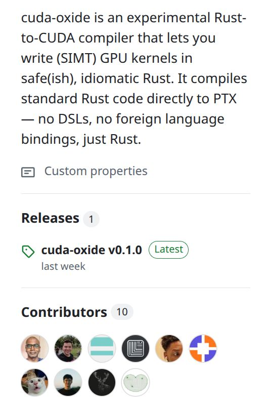

Becoming a contributor to NVIDIA's cuda-oxide
I am thrilled to share that I became a contributor to NVIDIA's cuda-oxide.
CUDA programming is entering a groundbreaking new era with cuda-oxide, a compiler that transforms Rust code directly into PTX (Parallel Thread Execution) without the overhead of wrappers, DSLs, or FFIs.
As a developer who loves both Rust and CUDA, I couldn't resist contributing to this project to help shape the future of GPU programming.
What draws me to it is Rust's compiler-level safety showing up in CUDA — from auto-discovered helpers to hardware-aware ABI mapping. I wholeheartedly hope cuda-oxide can stay high-performance while remaining extremely safe, and see wider official adoption.
